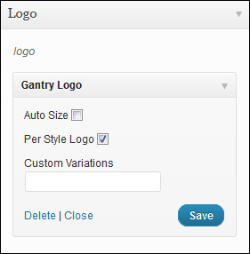
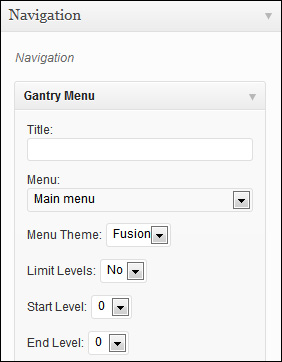
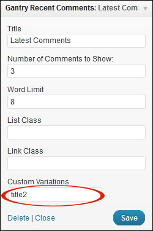
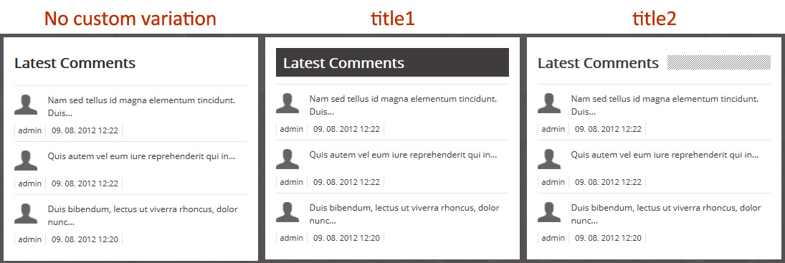
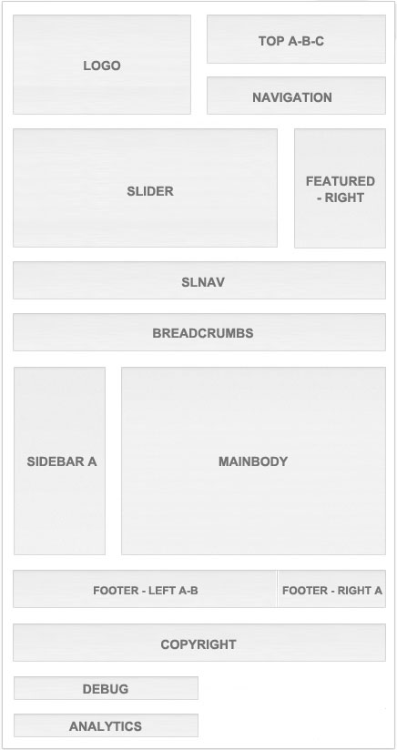
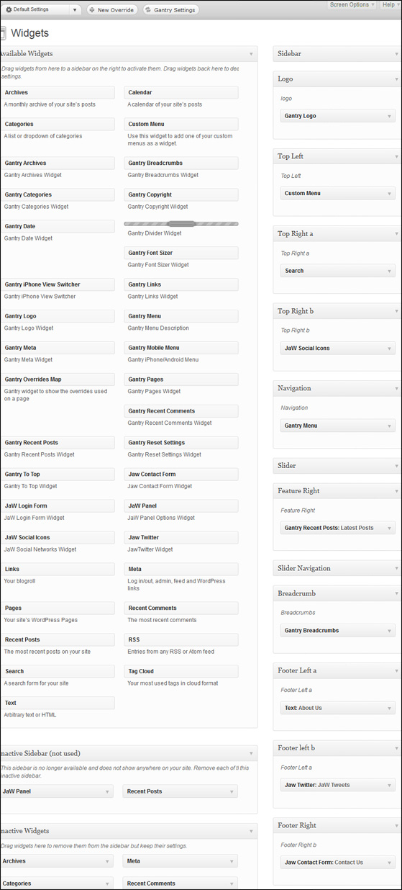
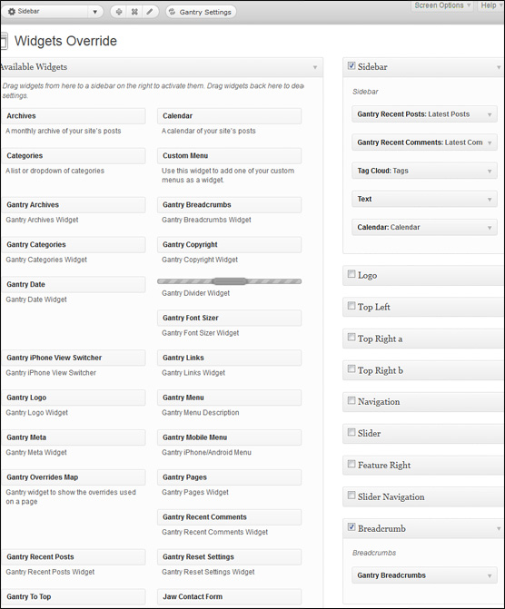

Screenshots from our demo settings will show you how to manage with your site. In Gantry Framework there is possibility to use different override for each page. Override called “Default settings” will be used as global. Every new override you create will overwrite your default settings. Remember that you have to choose an assignments for your new override. On the rest of pages will be used the default settings. Assignments you will find at Paula settings by your new override (this option is missing at Default settings).
Use the Gantry logo widget and placed it at the logo position.

Use the Gantry Menu widget and placed it at the navigation position.

We have two title styles - title1 and title2. If you want to use some style for your widget title write in one of styles in your widget (in the field Custom variation)

You can choose one of these styles or leave it empty. Check out our examples how it looks.


You can also take a look at our widget settings. In our demo we use a lot of overrides. We want to show you how widgets look like in our “Default settings” and in override for sidebar called “Sidebar”.
This is screenshot of widgets in Default Settings:

And this is screenshot of widget setting in Sidebar:
